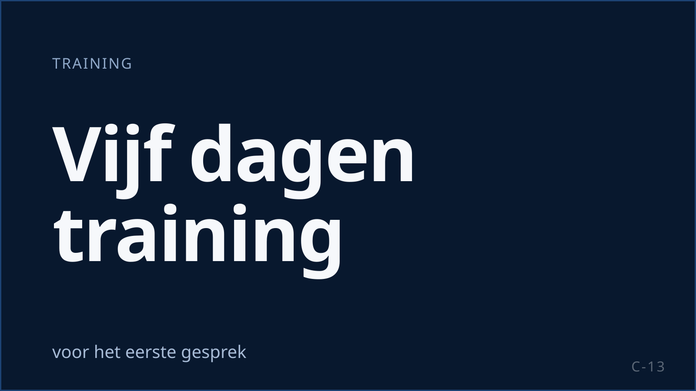

Telefonische fondsenwerving voor goede doelen
Ideële en charitatieve instellingen mogen ook na 1 juli 2026 zonder aparte opt-in bellen met contactgegevens uit een schenking, uit vrijwilligerswerk of uit het bijwonen van een manifestatie, voor eigen ideële of charitatieve doeleinden. De Code voor Telemarketing houdt daarbij een termijn aan van drie jaar na het einde van de relatie. KISS werft, upgradet en reactiveert donateurs met een vast team dat de missie kent en de Code Telemarketing toepast. ISO 27001-gecertificeerd.

Wat een goed doel van een belpartner vraagt
De relatie is het kapitaal
Een donateur geeft uit overtuiging. Het gesprek moet die overtuiging respecteren, anders kost werving meer vertrouwen dan het opbrengt.
Van eenmalig naar structureel
De grootste waarde zit in de stap van een eenmalige gift naar een maandelijkse machtiging. Dat is een gesprek over de missie, niet over een bedrag.
Het vierde kwartaal
Eindejaarscampagnes vragen in korte tijd veel capaciteit. Het team moet dan groot zijn en daarna weer passen bij het reguliere volume.
Toezicht in de keten
Het goede doel blijft zelf verantwoordelijk voor het bureau dat namens hem belt. Uw belpartner moet dus kunnen laten zien hoe hij werkt.
De regels voor goede doelen
| Regel | Wat het betekent | Hoe KISS dit toepast |
|---|---|---|
| Telecommunicatiewet, uitzondering blijft (art. 11.7 lid 5) | Een ideële of charitatieve organisatie mag zonder aparte opt-in bellen met contactgegevens die zij heeft verkregen uit een schenking aan die organisatie, uit vrijwilligerswerk bij die organisatie of bij het bijwonen van een manifestatie van die organisatie, en alleen voor eigen ideële of charitatieve doeleinden. Bij iedere boodschap moet de gebelde kosteloos en op gemakkelijke wijze verzet kunnen aantekenen. De wet noemt geen maximale termijn; de Code voor Telemarketing, zelfregulering, hanteert maximaal drie jaar na het einde van de relatie, met verlenging via de Commissie Balanstoets Telemarketing. | Bestandscheck per record: herkomst van de gegevens, einddatum relatie, termijn, opt-out. Records buiten de termijn worden niet gebeld. |
| ACM-handhaving in de keten | Het goede doel is zelf verantwoordelijk voor het bureau. Goede doelen laten hun telemarketingbureaus collectief jaarlijks auditen via DMCC. | Auditrecht voor de opdrachtgever; medewerking aan branche-audits die de sector organiseert. |
| Code Telemarketing (nieuwe versie per 1 oktober 2026) | Adverteerder en bureau noemen aan begin en eind van het gesprek; werkend, zichtbaar terugbelnummer (minimaal zes maanden bereikbaar), anoniem bellen is verboden; beltijden op werkdagen 09:00 tot 21:00 en op zaterdag 10:00 tot 17:00, niet op zondag en niet op de feest- en herdenkingsdagen die de code noemt; vragen of het gesprek gelegen komt; recht van verzet; maximaal drie belpogingen per dag met minimaal vier uur ertussen. | Alle punten staan in script, dialer-instellingen en trainingsprogramma. Recht van verzet wordt actief aangeboden en direct verwerkt. |
| Codes Fondsenwerving en CBF-Erkenning | Gelden voor het goede doel, niet voor het bureau; het bureau moet ze wél naleven in opdracht. | De relevante bepalingen uit uw codes worden in de briefing vertaald naar scriptregels en scoringscriteria. |
| Bevestiging van een machtiging | Wij doen geen uitspraak over de vraag of een periodieke donatie een overeenkomst op afstand is; dat stemmen wij per opdrachtgever af. | Wij bevestigen elke machtiging schriftelijk en stemmen de formulering over bedenktijd per opdrachtgever met u en uw jurist af. |
| Gespreksopname | Toegestaan voor bewijs, kwaliteit en training, mits de gebelde vooraf wordt geïnformeerd, het doel is vastgelegd, de bewaartermijn beperkt is en opnames beveiligd zijn. | Aangekondigd aan het begin van het gesprek; beveiligd opgeslagen; bewaartermijn volgens de verwerkersovereenkomst. |
Bronnen: Goede Doelen Nederland, telemarketing; Goede Doelen Nederland, strengere handhaving ACM (08-04-2025); DDMA, Code Telemarketing; Goededoelen.nl, Codes Fondsenwerving; ACM ConsuWijzer, gespreksopname. Meer: Telemarketing sinds 1 juli 2026. Stand van de regelgeving op 17 september 2026; dit is geen juridisch advies. Wij toetsen de toepassing per campagne met u en uw jurist.
Vier gesprekken die een goed doel laat voeren
Donateurswerving
Leads uit straatwerving, online acties, petities en evenementen telefonisch opvolgen naar een structurele machtiging. Snel na de lead, met de toestemmingsbasis per record vastgelegd.
Upgrade
Eenmalige gevers en bestaande donateurs een hogere of maandelijkse bijdrage voorstellen, onderbouwd met wat de bijdrage mogelijk maakt.
Reactivatie
Oud-donateurs binnen de driejaarstermijn opnieuw benaderen. De bestandscheck bepaalt wie; de missie bepaalt hoe.
Behoud
Donateurs die hun machtiging stopzetten bellen om de reden te horen en, waar passend, een lagere bijdrage of een pauze aan te bieden.
Een team dat de missie kan uitleggen
Voor een goed doel selecteren wij agents die de missie geloofwaardig kunnen overbrengen. De campagnetraining na de vijfdaagse basistraining gaat over uw programma's, de besteding van de bijdragen en de vragen die donateurs stellen. Het script en de gespreksopening worden vóór de eerste call getoetst aan de Code Telemarketing en aan de bepalingen uit uw eigen codes.
Op de vloer stuurt een supervisor een vast team. Supervisors beluisteren opgenomen gesprekken en scoren op toon, volledigheid van de informatie en het respecteren van een "nee". In de rapportage ziet u aantallen, machtigingen na schriftelijke bevestiging, opt-outs en de kwaliteitsscores per team. Rond het vierde kwartaal schalen wij op in nieuwe teams met een eigen supervisor, uit eigen recruitment, zodat de kwaliteitsbewaking meegroeit met de capaciteit.
-
Case · Loterijen en goede doelen
Goede Doelen Loterijen: samenwerking sinds 2019
Campagnes opbouwen, inrichten en uitvoeren: winback, leadopvolging en commercieel inbound.
Lees de case
Vragen van goede doelen
Hoe lang na de laatste donatie mogen wij nog bellen?
De wet stelt geen maximale termijn; de Code voor Telemarketing houdt maximaal drie jaar na het einde van de relatie aan, met verlenging alleen na goedkeuring van de Commissie Balanstoets Telemarketing. Wij controleren de herkomst van de gegevens en de einddatum per record vóór de campagne.
Wij zijn zelf verantwoordelijk richting de ACM. Wat levert KISS als bewijs?
Scripts, trainingsregistratie, gespreksopnames, opt-out-verwerking, kwaliteitsscores en rapportage. Wij richten de uitvoering compliant in en leveren het bewijs; de verantwoordelijkheid blijft bij u.
Werkt KISS mee aan de jaarlijkse audit van ons bureau?
Ja. Auditrecht staat in de verwerkersovereenkomst en wij werken mee aan branche-audits die de sector organiseert.
Hoe gaat u om met een donateur die niet gebeld wil worden?
Het recht van verzet wordt actief aangeboden en direct verwerkt. Opt-outs gaan terug naar u, zodat ook uw andere kanalen ze respecteren.
Kunnen wij de vloer bezoeken?
Ja. Laan van Oversteen 20 in Rijswijk. Wij laten u de training, de supervisie en de rapportage zien.
Andere sectoren: Media en uitgevers · Loterijen · Overkoepelend: B2C-sales uitbesteden · Kwaliteit en compliance
Bespreek uw salesvraag.
Vertel ons welke doelgroep, welk volume en welke periode u voor ogen heeft. Wij vertellen u eerlijk of en hoe KISS dat kan organiseren.